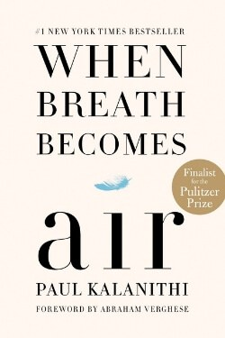

Library › Psychology & People
When Breath Becomes Air — Summary & Key Lessons

A brilliant neurosurgeon diagnosed with terminal cancer at 36 writes about what makes a life meaningful.
📖 OPEN THE FULL INTERACTIVE BREAKDOWN →🌐 Read it in Hindi, Hinglish, Gujarati, Tamil & 22 more languages — free, with audio.
💡 The Big Idea
Kalanithi had trained his whole life to understand the brain and death from the outside; at 36 he got to study it from the inside. His memoir is the rare book where the dying man is also the expert: he refuses both despair and false comfort, and searches for meaning in medicine, literature, family and the last thing he can do — write. His answer: the meaning of life is not discovered; it is made, moment by moment, in what we love.
🧠 The 6 Key Lessons
Lesson 1: Face the Diagnosis Straight
Chapter 1: The Scan
Kalanithi's response to a terminal diagnosis was not denial but sustained, frightening clarity — learning the statistics, planning the treatment, keeping his own agency. His insight: the terror of the unknown is often worse than the known. Knowledge is a form of freedom; even bad knowledge, because it lets you choose.
📖 Example: The families who asked the hard questions navigated better than those who hoped in silence. Read the full example →
⚡ Do this: For one fear you have avoided, look at the actual facts today — the worst case is usually less vague than the dread.
Lesson 2: Meaning Is Made, Not Found
Chapter 2: The Search
Kalanithi was a literature lover before he was a surgeon; he asked the perennial question — what makes life meaningful? He answers: meaning is not a treasure you locate but a structure you build. His tools: relationships, work, and the honest acceptance of the present. Even dying, he built — the book itself is his building.
📖 Example: A dying man writing for future readers is meaning under construction — not found in advance, made on the spot. Read the full example →
⚡ Do this: Write your current meaning-building project: what are you constructing that outlives the day?
Lesson 3: The Doctor's Chair Flips
Chapter 3: The Conversion
The book's unique vantage: the man who had been the doctor's hand became the patient in the bed. He documents the strange clumsiness of the system he loved — and the enormous difference between data and lived experience. The lesson applies everywhere: expertise about a domain is not the same as living in it; listen to the people inside the experience.
📖 Example: The best product designers use the product themselves; the best doctors will one day be patients too. Read the full example →
⚡ Do this: Spend one hour in the customer's or colleague's actual seat this month — literally, if possible.
Lesson 4: Time's New Currency
Chapter 4: The Numbers
When your horizon collapses, time revalues: minutes with family outweigh ambitions; the future loses its veto. Kalanithi's notes on this are practical: he planned for his daughter's childhood he would not see, wrote for readers he would never meet. The lesson is not morbid — it is a recalibration available to everyone: price your hours by what actually matters.
📖 Example: The dying often regret hours lost to status; the healthy rarely notice the same exchange rate. Read the full example →
⚡ Do this: Run the horizon test on your week: if you had three years, what in this week would change?
Lesson 5: The Asymptote
Chapter 5: The End
Kalanithi's final idea: you cannot reach perfection, but you can believe in an asymptote — a line you approach forever. Life is the approach, not the arrival: meaning lives in the direction of travel, not the destination. The book's last pages were written as he died — the asymptote made visible.
📖 Example: A writer's unfinished book is not a failure; it is the approach itself — the direction is the achievement. Read the full example →
⚡ Do this: Name your asymptote: the direction you are moving in — and give one hour to it today, no completion required.
Lesson 6: Writing Into the Dark
Epilogue: The Keeper of the Letter
Kalanithi's final act is his most instructive: he wrote a book for a daughter who would read it as a young woman he would never meet, and for readers he would never know. That is the definition of meaning fully understood: it is made by what you leave, not by what you keep — and the leaving is itself the living.
📖 Example: A dying man writing for an unborn child: the book is the father's last letter, and it did not die with him. Read the full example →
⚡ Do this: Write one letter to someone who will read it after you are gone — or after this year. The act of leaving is the point, not the length.
✅ 5-Step Action Plan
- Face one avoided fear with actual facts today.
- Write your current meaning-building project.
- Spend one hour in another's seat this month.
- Run the three-year horizon test on this week.
- Name your asymptote and give it one hour today.
⚠️ When This Doesn't Work
This is a personal memoir of one family's experience, not medical advice; Kalanithi's choices (proceeding with aggressive treatment) were his, and other paths are no less worthy. The literary voice is unmatched, but it is one voice.
💀 The Graveyard Proves It
📷 Steve Jobs — Nine Months of Fruit Juice vs. Cancer. Burn: Possibly his life Read the full case study →
💬 Best Quotes from When Breath Becomes Air
- “The question isn't how long you live, but what makes life worth living.”
- “Even with the diagnosis, there was a life — and I had to create it.”
- “You can't ever reach perfection, but you can believe in an asymptote.”
Interactive version: mark lessons as read, listen in your language, share quote cards.